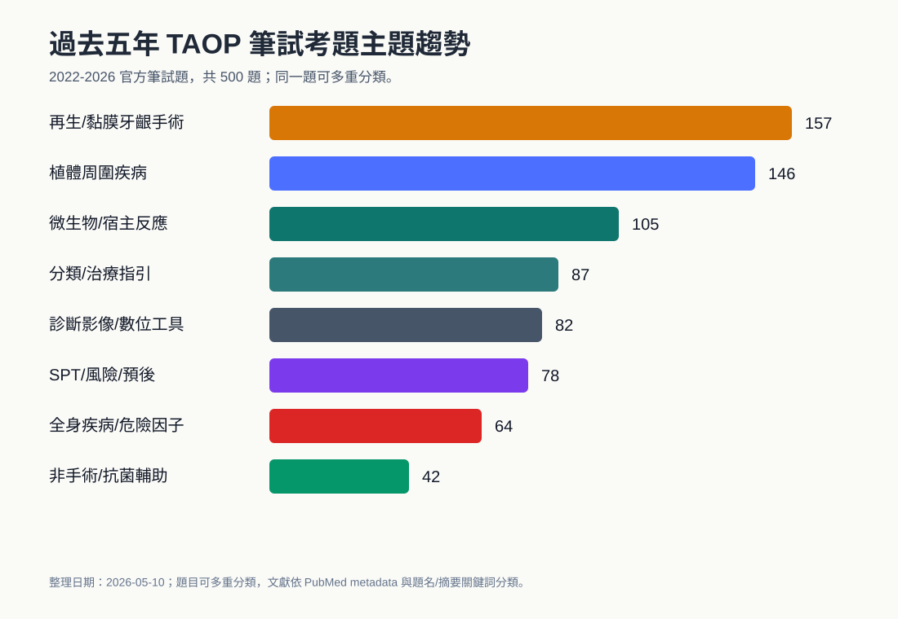
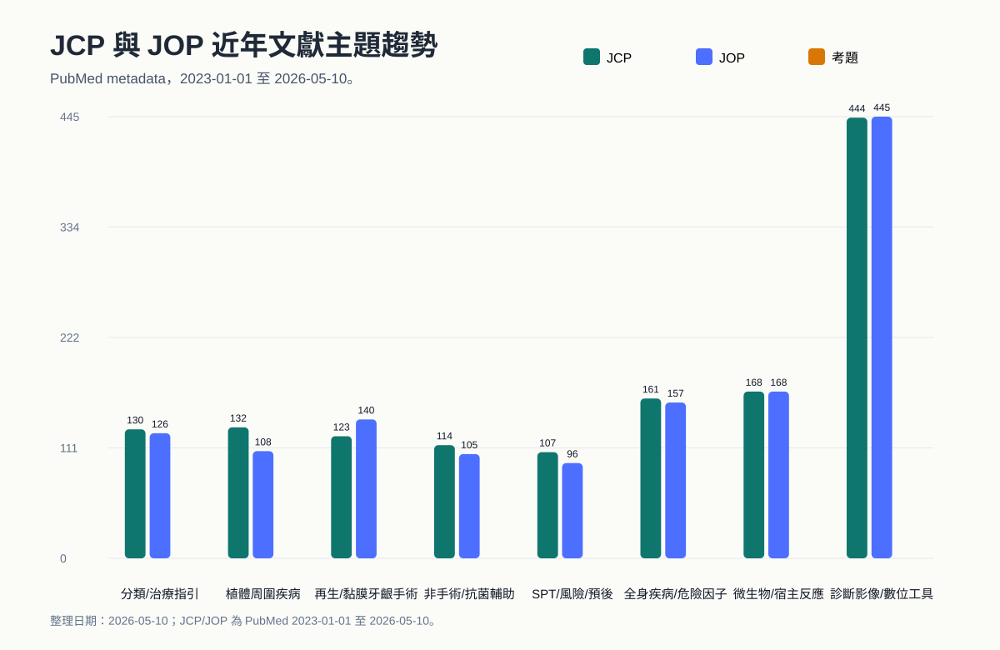
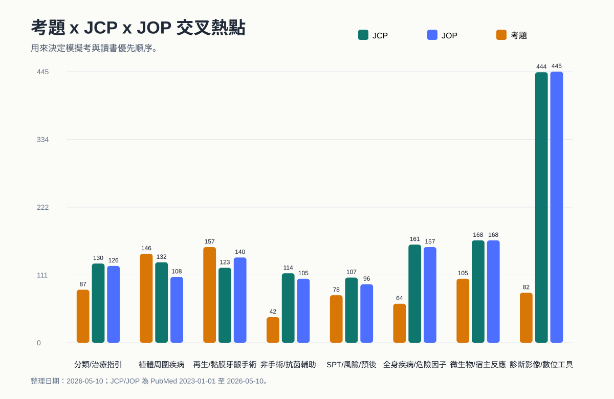
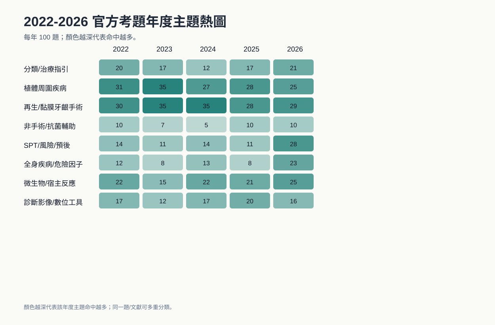

牙周病專科考試趨勢資訊圖表
整理日期：2026-05-10。資料包含 2022-2026 TAOP 官方考題，以及 JCP/JOP 2023-2026 PubMed metadata。
01_過去五年TAOP考題主題趨勢

02_JCP_JOP文獻主題趨勢比較

03_考題_JCP_JOP交叉熱點

04_年度主題熱圖_考題

整理日期：2026-05-10。資料包含 2022-2026 TAOP 官方考題，以及 JCP/JOP 2023-2026 PubMed metadata。



